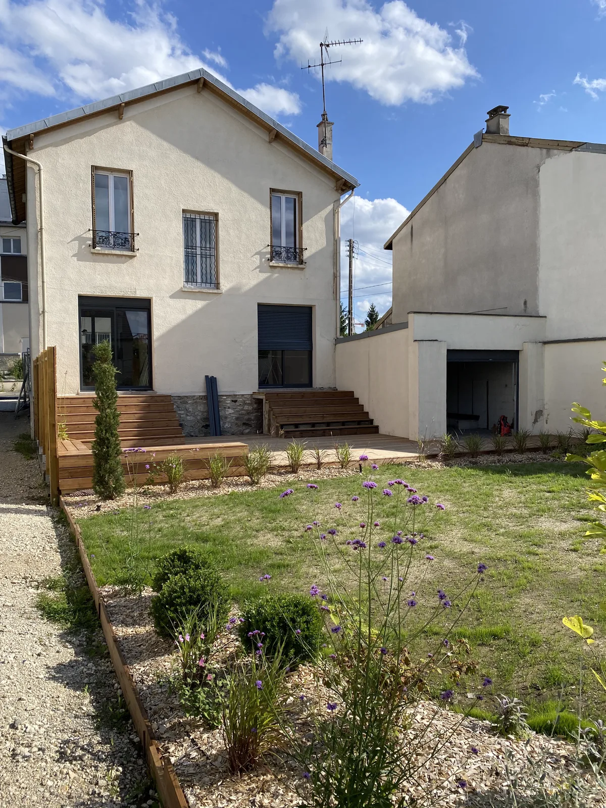
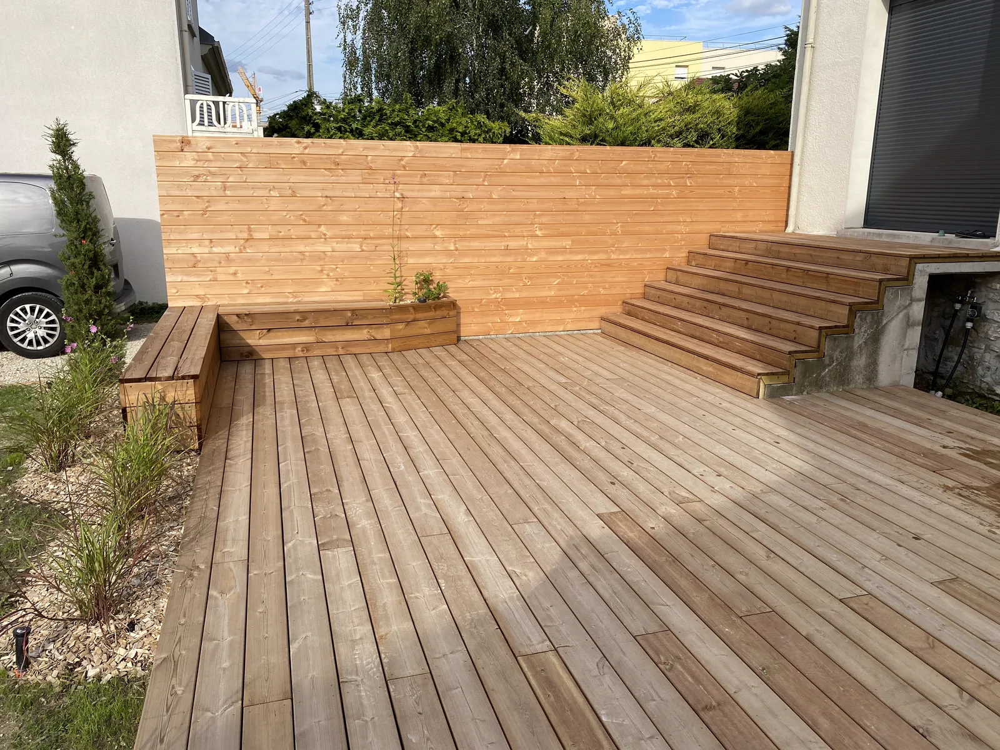
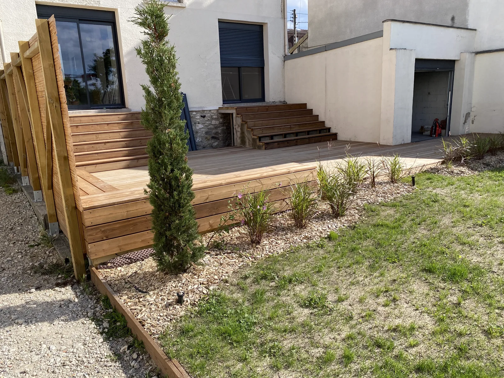
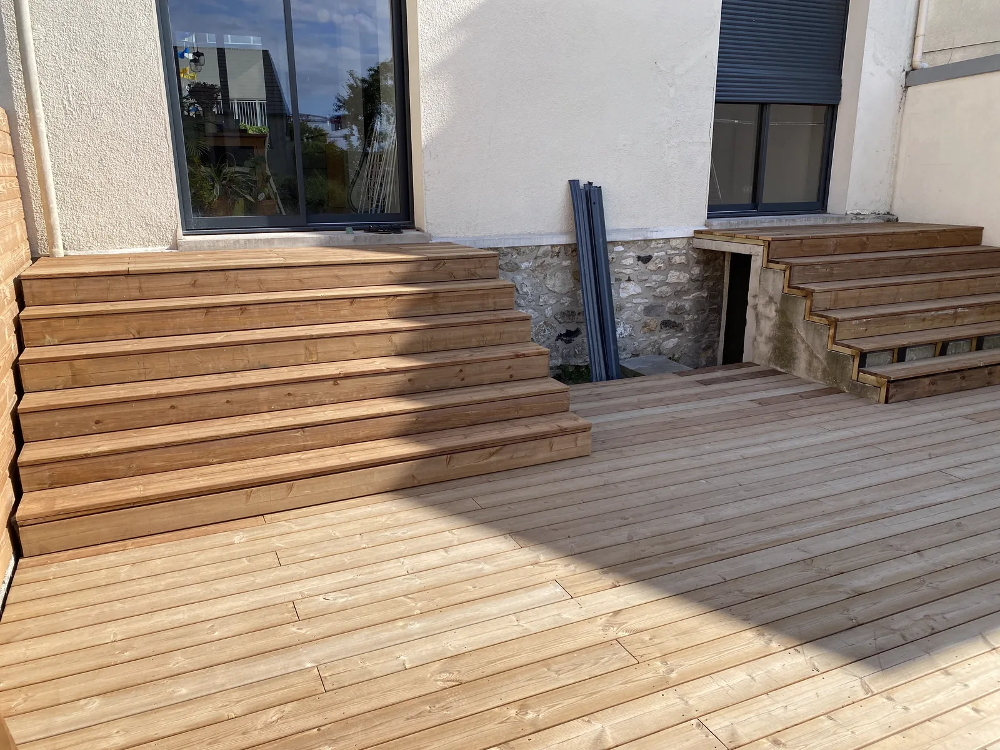
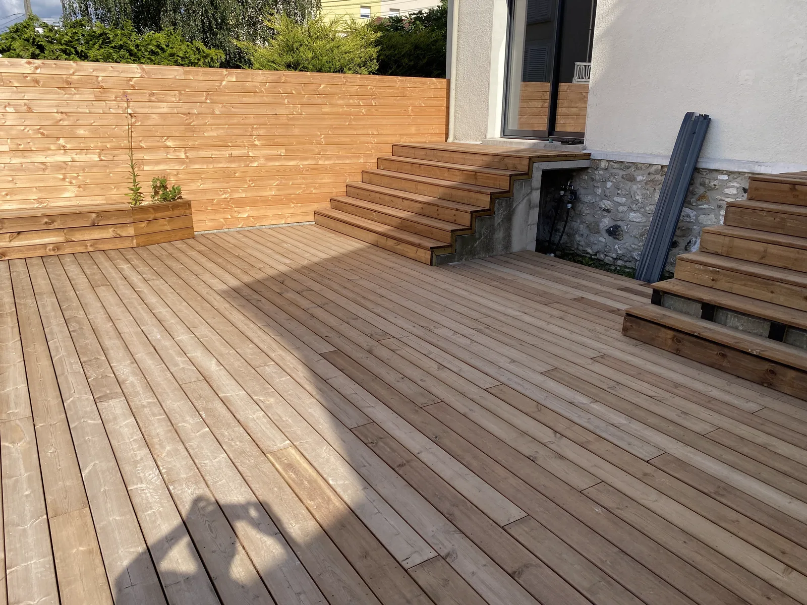
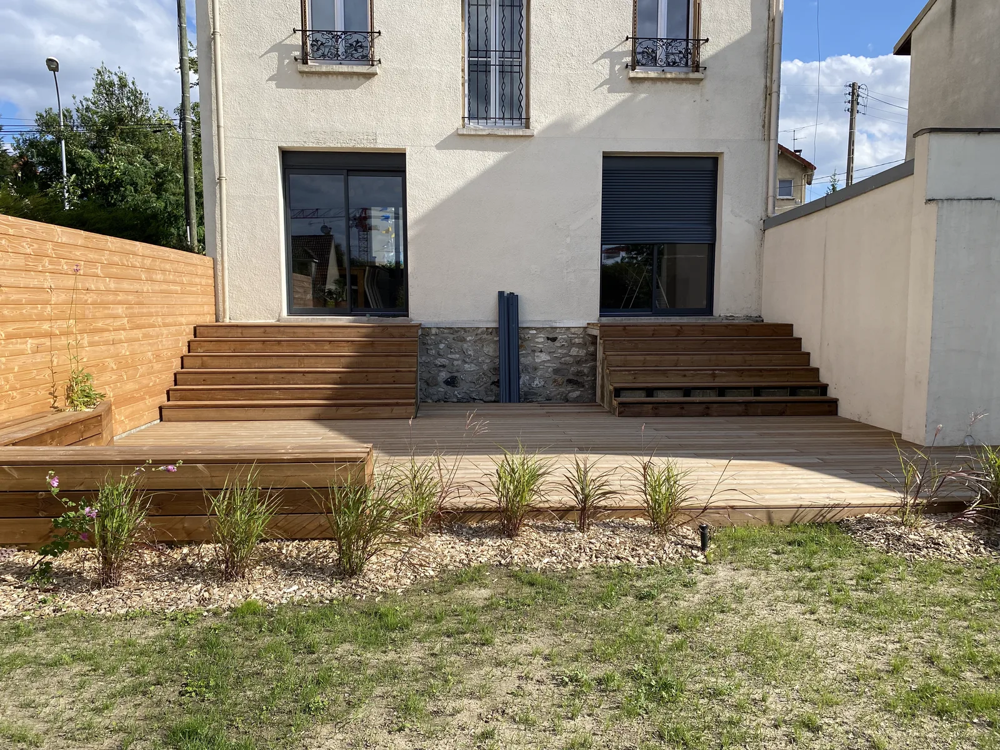
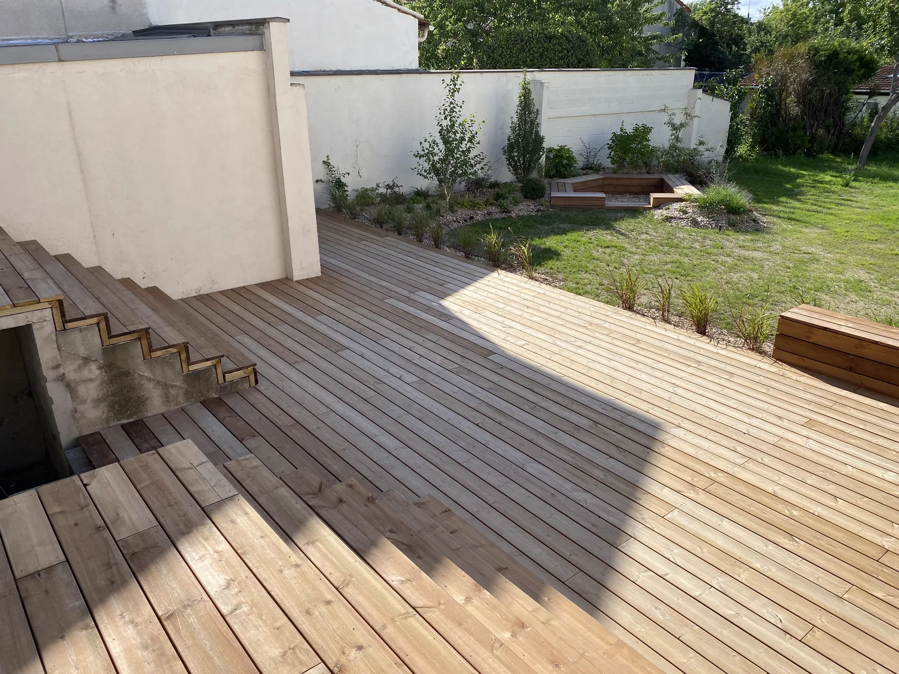

Le projet
Chez un client de Noisy-le-Grand, une ancienne dalle béton dénivelée, marquée par la mousse, desservait le jardin par des escaliers vieillissants. L'objectif : transformer cet espace en une véritable terrasse en bois chaleureuse, confortable et pensée pour vivre dehors, tout en rattrapant les différences de niveau.
DS.BAT a réalisé l'ensemble de la menuiserie extérieure : une terrasse en pin traité posée sur plots réglables (avec géotextile et lambourdes), des marches sur mesure pour relier les niveaux, un brise-vue en bois pour l'intimité, ainsi que des bancs intégrés et des bacs à fleurs assortis.
Ce que DS.BAT a réalisé
Réalisé par DS.BAT :
- Terrasse en pin traité posée sur plots réglables (géotextile, lambourdes, lames)
- Marches sur mesure pour rattraper les niveaux
- Brise-vue en bois
- Bancs intégrés et bacs à fleurs en bois
Les plantations et l'aménagement végétal du jardin ont été réalisés par un tiers ; DS.BAT a pris en charge l'intégralité de l'ouvrage bois.
Le résultat en images






À voir aussi
Nos autres chantiers de rénovation et d'aménagement :
- Rénovation & traitement d'un mur humide à Sèvres — plomberie, sols, peinture
- Modification de façade à Villevaudé — maçonnerie & couverture
- Atelier d'artiste à Paris 14ᵉ — restructuration complète
Découvrez tous nos métiers et nos zones d'intervention.